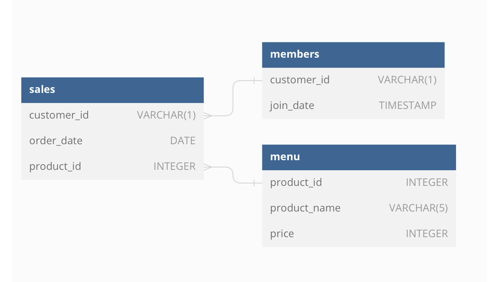

In this first part of a series of SQL case studies, I use Postgres SQL to answer a bunch of business questions
sql
Author
Edun Joshua
Published
November 18, 2023
Introduction
A restaurant, Danny’s Diner, sells 3 foods: sushi, curry and ramen. Danny’s Diner is in need of your assistance to help the restaurant stay afloat - the restaurant has captured some very basic data from their few months of operation but have no idea how to use their data to help them run the business.
You have 3 key datasets for this case study:
sales
menu
members
Entity Relationship Diagram

Sales
The sales table captures all customer_id level purchases with an corresponding order_date and product_id information for when and what menu items were ordered.
Menu
The final members table captures the join_date when a customer_id joined the beta version of the Danny’s Diner loyalty program.
Members
The final members table captures the join_date when a customer_id joined the beta version of the Danny’s Diner loyalty program.
key concepts: CTEs, window functions
Database Connection
First, I’ll create a connection to my local postgres database thanks to the RPostgres package.
# | warning: false# Creating a connection to my local postgres databaselibrary(RPostgres)
Warning: package 'RPostgres' was built under R version 4.3.2
con <-dbConnect(Postgres(),dbname ="danny_diners",user ="postgres",password = my_password)
Queries
Now let’s convert business questions into SQL queries!
1. What is the total amount each customer spent at the restaurant?
select s.customer_id as customer,sum(m.price) as total_amountfrom sales sinnerjoin menu m on s.product_id = m.product_idgroupby customer;
3 records
customer
total_amount
B
74
C
36
A
76
2. How many days has each customer visited the restaurant?
select customer_id,count(distinctextract(dayfrom order_date ) ) as no_of_days_visitedfrom salesgroupby customer_idorderby customer_id;
3 records
customer_id
no_of_days_visited
A
4
B
5
C
2
This SQL query calculates the number of days each customer has visited a restaurant by grouping the sales transactions by customer ID, extracting the day from the order date, counting the distinct days, and ordering the results by customer ID.
3. What was the first item from the menu purchased by each customer?
with cte as (select customer_id, order_date,row_number() over (partitionby customer_idorderby order_date ) as order_rank, product_idfrom sales)select c.customer_id, c.order_date, c.order_rank, m.product_namefrom cte cnaturaljoin menu mwhere order_rank =1;
3 records
customer_id
order_date
order_rank
product_name
A
2021-01-01
1
sushi
B
2021-01-01
1
curry
C
2021-01-01
1
ramen
Within the CTE, the row_number() function is employed to assign a ranking to each order for each customer based on the order_date. The ranking starts from 1, indicating the first order for each customer. The main query then selects the customer ID, order date, order rank, and product name from the CTE, joining the menu table to retrieve the product name corresponding to the product ID. Finally, it filters the results to include only records with an order rank of 1, effectively selecting the first item purchased for each customer.
4. What is the most purchased item on the menu and how many times was it purchased by all customers?
with cte as(select product_id,count(product_id)from salesgroupby product_idorderbycount(product_id) desclimit1) -- Most purchased item on the menu is the product with the id 3 which is ramen, according to cteselect customer_id,count(product_id) as count_of_most_purchased_productfrom saleswhere product_id in (select product_idfrom cte )groupby customer_id;
3 records
customer_id
count_of_most_purchased_product
A
3
B
2
C
3
The query utilizes a common table expression (CTE) named cte to generate a temporary result set. Within the CTE, the count() function is employed to count the number of times each product ID appears in the sales table. The results are then sorted in descending order based on the product count. The limit 1 clause restricts the output to the top row, effectively identifying the product ID with the highest count.
The main query then selects the customer ID and the count of the most purchased product for each customer. It filters the sales table to include only records where the product_id matches the one identified in the CTE, effectively focusing on the most purchased item. Finally, it groups the results by customer_id to determine how many times each customer purchased the most popular item.
5. Which item was the most popular for each customer?
with cte_1 as (select customer_id, product_id,count(product_id) as count_of_itemfrom salesgroupby customer_id, product_id),cte_2 as (select*,row_number() over (partitionby customer_idorderby count_of_item desc ) as order_rankfrom cte_1)select c.customer_id, m.product_name, c.count_of_itemfrom cte_2 cnaturaljoin menu mwhere order_rank =1;
3 records
customer_id
product_name
count_of_item
C
ramen
3
B
ramen
2
A
ramen
3
This query aims to identify the most popular item for each customer. The query utilizes two common table expressions to process the data and generate the desired output. The first CTE, named cte_1, calculates the count of each product purchased by each customer. It groups the rows in the sales table by customer_id and product_id, and then counts the occurrences of each product ID for each customer. This step determines the frequency of each product purchase for each customer.
The second CTE, named cte_2, assigns a ranking to each product for each customer based on the purchase frequency calculated in cte_1. It uses the row_number() function and partitions the data by customer_id, sorting within each partition by the count_of_item in descending order. This step effectively identifies the product with the highest purchase frequency (i.e., the most popular item) for each customer.
The main query then selects the customer ID, product name, and purchase count for each customer’s most popular item. It joins the menu table to obtain the corresponding product names and filters the results to include only records with an order_rank of 1, ensuring that only the most popular item for each customer is selected.
6. Which item was purchased first by the customer after they became a member?
with cte_1 as (select*from membersnaturaljoin salesorderby order_date),cte_2 as (select customer_id, product_id, order_date,row_number() over(partitionby customer_idorderby order_date ) as order_rankfrom cte_1where order_date > join_date)select c.customer_id, m.product_name, c.order_date, c.order_rankfrom cte_2 cnaturaljoin menu mwhere order_rank =1;
2 records
customer_id
product_name
order_date
order_rank
A
ramen
2021-01-10
1
B
sushi
2021-01-11
1
The first CTE, named cte_1, combines the members and sales tables, and sorts the combined data by order_date, ensuring a chronological order of transactions. The second CTE, named cte_2, focuses on purchases made after each customer’s membership start date. It filters the cte_1 data to include only records where the order_date is later than the join_date (membership start date).
Additionally, it assigns an order_rank to each purchase for each customer using the row_number() function. The ranking is partitioned by customer_id and sorted within each partition by order_date. This identifies the first purchase (order_rank = 1) made by each customer after becoming a member. The main query then selects the customer ID, product name, order date, and order rank for each customer’s first purchase after becoming a member. It joins the menu table to retrieve the corresponding product names and filters the results to include only records with an order_rank of 1, ensuring that only the first purchase is selected.
7. Which item was purchased just before the customer became a member?
with cte_1 as (select*from membersnaturaljoin salesorderby order_date),cte_2 as (select customer_id, product_id, join_date, order_date,row_number() over(partitionby customer_idorderby order_date desc ) as order_rankfrom cte_1where order_date < join_date)select c.customer_id, m.product_name, c.order_date, c.order_rankfrom cte_2 cnaturaljoin menu mwhere order_rank =1;
2 records
customer_id
product_name
order_date
order_rank
A
sushi
2021-01-01
1
B
sushi
2021-01-04
1
The first CTE, named cte_1, combines the members and sales tables, and sorts the combined data by order_date in ascending order, ensuring a chronological sequence of transactions.
The second CTE, cte_2, focuses on purchases made before each customer’s membership start date. It filters the cte_1 data to include only records where the order_date is earlier than the join_date (membership start date).
It assigns an order_rank to each purchase for each customer using the row_number() function. The ranking is partitioned by customer_id and sorted within each partition by order_date in descending order. This identifies the last purchase (order_rank = 1) made by each customer before becoming a member.
The main query then selects the customer ID, product name, order date, and order rank for each customer’s last purchase before becoming a member. It joins the menu table to retrieve the corresponding product names and filters the results to include only records with an order_rank of 1, ensuring that only the last purchase is selected.
8. What is the total items and amount spent for each member before they became a member?
with cte_1 as (select*from membersnaturaljoin salesnaturaljoin menuorderby order_date)select customer_id,count(distinct product_id) as count_of_products,sum(price) as total_amount_spentfrom cte_1where order_date < join_dategroupby customer_id;
2 records
customer_id
count_of_products
total_amount_spent
A
2
25
B
2
40
The query utilizes a CTE named cte_1 to prepare the data and simplifies the aggregation in the main query.
The main query then aggregates the data for each customer based on their membership status. It filters the cte_1 data to include only records where the order_date is earlier than the join_date (membership start date). For each customer, it counts the distinct product_id values to determine the total number of unique items purchased and calculates the sum of price values to determine the total amount spent. The results are grouped by customer_id to provide individual summaries for each member.
9. If each $1 spent equates to 10 points and sushi has a 2x points multiplier - how many points would each customer have?
with cte as (select*,casewhen product_name ='sushi'then price *10*2else price *10end pointsfrom membersnaturaljoin salesnaturaljoin menu)select customer_id,sum(points) as total_pointsfrom ctegroupby customer_id;
2 records
customer_id
total_points
A
860
B
940
The CTE combines the members, sales, and menu tables, providing a comprehensive view of customer memberships, their purchases, and the corresponding product names.
The main query then summarizes the points earned for each customer. It groups the data from the CTE by customer_id and calculates the sum of points values for each group, effectively determining the total points earned by each customer.
10. In the first week after a customer joins the program (including their join date) they earn 2x points on all items, – not just sushi - how many points do customer A and B have at the end of January?
with cte as (select*,casewhen product_name ='sushi'then price *10*2else price *10end points,casewhen order_date - join_date <=7then2else1end multiplierfrom membersnaturaljoin salesnaturaljoin menu),cte_2 as (select*, points * multiplier as total_pointsfrom cte)select customer_id,sum(total_points) as total_pointsfrom cte_2groupby customer_id;
2 records
customer_id
total_points
A
1720
B
1760
The first CTE, named cte, joins the members, sales, and menu tables, and calculates the points earned for each purchase using a conditional CASE expression, similar to the previous query.
Additionally, it assigns a multiplier to each purchase based on whether it falls within the first week after the customer’s join date. For purchases within the first week, the multiplier is 2 (double points); for purchases outside the first week, the multiplier is 1 (standard points).
The second CTE, named cte_2, simplifies the calculation by multiplying the points and multiplier columns for each purchase, effectively determining the total points earned per transaction. The main query then summarizes the points earned for each customer, including the double points accrued during the first week. It groups the data from cte_2 by customer_id and calculates the sum of total_points values for each group, providing the total points earned by customer A and customer B at the end of January
11. Recreate the following table output using the available data:
select s.customer_id, s.order_date, men.product_name, men.price,CASEWHEN s.order_date >= m.join_date THEN'Y'ELSE'N'ENDfrom sales sLEFTJOIN menu men ON s.product_id = men.product_idLEFTJOIN members m on m.customer_id = s.customer_idORDERBY s.customer_id, s.order_date;